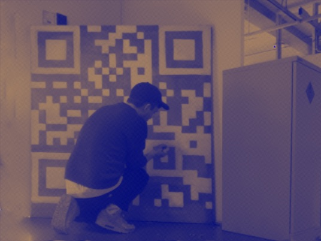

Christy Taylor is an artist based in Hastings. His work often begins with found images, objects, places and systems. Through repetition, rearrangement and misuse, he looks at how these things influence the way people think, behave and make meaning. The form the work takes is usually determined by the idea, and sometimes the process becomes the subject itself.
He completed an MA in Contemporary Art Practice at the Royal College of Art in 2024 and has exhibited internationally, including at Tate Modern and Camden Art Centre.
Contact
studio@christytaylor.co.uk Artist CV
51.55112914315447, -0.18352334692629535, Mild Steel, Spray Paint
Future Archaeologies — Camden Art Centre, 2024.